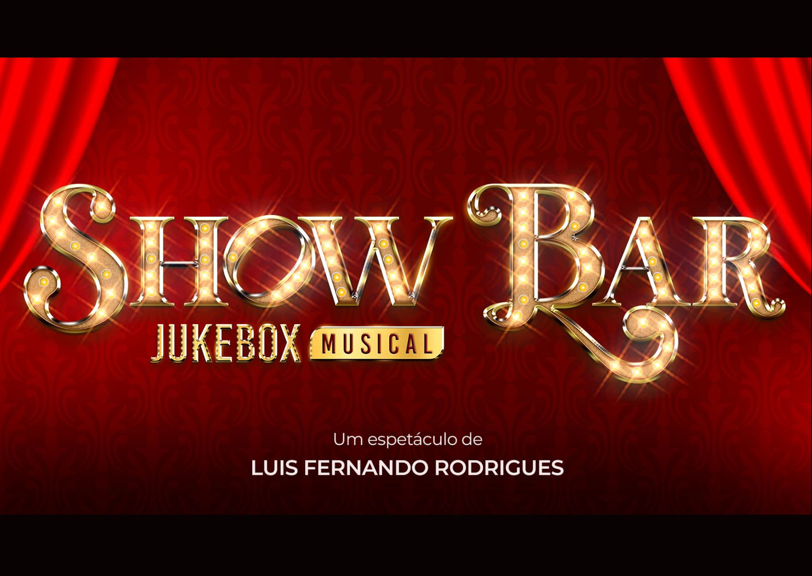

“Show Bar – Jukebox Musical” transforma o Marte Hall SP em um encontro entre teatro musical e grandes sucessos da música

Criado por Luis Fernando Rodrigues, espetáculo estreia em 2026 e convida o público a viver uma noite de histórias, emoções e canções em ambiente de bar
A Lumus Produções, sob a condução de Luis Fernando Rodrigues, apresenta em 2026 uma nova experiência cênico-musical que propõe um encontro direto entre o teatro musical e grandes sucessos da música nacional e internacional. Show Bar – Jukebox Musical chega ao palco do Marte Hall SP, no primeiro semestre do ano, como um espetáculo imersivo que mistura narrativa, música ao vivo e convivência, em um ambiente de consumação liberada.
As vendas de ingressos têm início em 15 de janeiro de 2026, mas o público já pode garantir acesso antecipado por meio da lista de espera disponível no site da Fever.
Um bar onde histórias se cruzam ao som da música
Ambientado em um bar vibrante, Show Bar – Jukebox Musical transforma cada canção em memória e cada encontro em narrativa. Ao longo da noite, histórias ganham vida embaladas por um repertório eclético, interpretado por um elenco diverso de artistas do teatro musical, reunindo diferentes estilos, formações e gerações.
Entre risadas, copos erguidos e vozes potentes, o público não apenas assiste ao espetáculo, mas é convidado a brindar junto com os artistas, tornando-se parte ativa da experiência. O palco se converte em um espaço de escuta, partilha e celebração, onde música e emoção conduzem a dramaturgia.
A trajetória por trás do projeto
Idealizador do projeto Teatro Musical Canta (TMC) — inspirado no formato internacional Broadway Sings —, Luis Fernando Rodrigues construiu, ao lado de Grazy Pisacane, um olhar curatorial reconhecido pela capacidade de reunir intérpretes do teatro musical brasileiro em formatos inovadores, ampliando o diálogo entre cena, repertório e universos musicais distintos.
Juntos, estiveram à frente de dez edições online durante a pandemia, além de duas edições presenciais de destaque: Rainhas do Sertanejo (2024) e Jovem Guarda (2025). Ao longo de sua trajetória, Rodrigues também participou de diversas produções autorais e associadas, como os musicais Godspell – Em Busca do Amor, Cruella, Bare – Uma Ópera Pop, Elas Brilham, 80 Doc. Musical e O Mágico de Oz, além de projetos em parceria com o circo Abracadabra.
Essa experiência múltipla é o ponto de partida para Show Bar – Jukebox Musical, que sintetiza sua vocação para transitar entre linguagens, públicos e formatos híbridos de espetáculo.
Uma experiência cultural imersiva
Mais do que um musical, Show Bar – Jukebox Musical propõe uma experiência cultural completa, combinando música ao vivo, narrativa teatral e o clima descontraído de um bar. O espetáculo conta com cardápio informal, sabores que dialogam com a cultura brasileira e um ambiente pensado para a convivência, onde comida, bebida e música se encontram.
Celebrando cores, ritmos e diversidade, a montagem cria uma atmosfera vibrante e acolhedora, convidando o público a viver uma noite em que a música atravessa gerações e transforma encontros em histórias inesquecíveis.